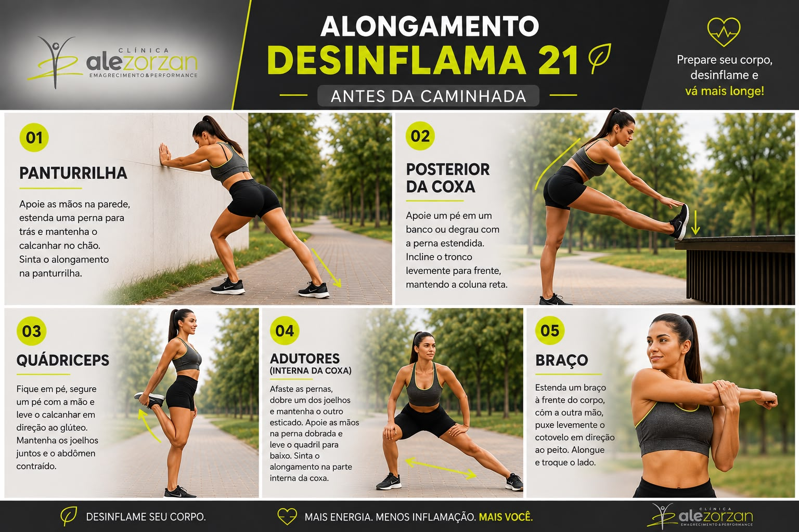

Bem-vindo(a) ao Desinflama 21!
Aqui está tudo o que você precisa para os próximos 21 dias de transformação. Acesse seus materiais, ferramentas e acompanhamento abaixo.
Jornada de 21 Dias
Central de Acesso
Navegue pelas 7 seções fundamentais do seu programa
O Protocolo
As 3 fases essenciais (Desintoxicação, Restauração e Manutenção) e download do guia completo.
Guia Alimentar
Alimentos permitidos, proibidos, cardápios sugeridos e lista de compras para feira e mercado.
Métricas & Hidratação
Calcule seu IMC e sua meta diária de água com rastreador interativo de copos diários.
Apoio & Chás
Compostos fitoterápicos, própolis, cúrcuma e chás estratégicos para acelerar sua recuperação.
Receitas Práticas
Shots matinais, sucos detox, caldos restauradores e pratos anti-inflamatórios detalhados.
Sintomas & Evolução
Checklist interativo de sono, dores, energia e inchaço para calcular seu índice de bem-estar.
Treinos & Movimento
Alongamentos, cronograma aeróbico e treinos de força para casa e academia.
Dúvidas & Suporte
Perguntas frequentes, canal do WhatsApp e autoridade médica da Clínica Ale Zorzan.
"Desinflamar não é apenas sobre o que tiramos do prato, mas sobre a paz, o ritmo e o respeito que devolvemos às nossas células a cada escolha."
O Protocolo Desinflama 21
Um roteiro passo a passo dividido em 3 semanas estratégicas para desintoxicar, reparar seu trato digestivo e consolidar novos hábitos.
Semana 1: Desintoxicação & Reset
O objetivo desta primeira semana é desacelerar a sobrecarga hepática e renal, eliminando gatilhos inflamatórios clássicos e ativando a drenagem de toxinas.
Semana 2: Restauração & Microbiota
Com a redução da carga tóxica, focamos na reparação da permeabilidade intestinal, modulação do pH corporal e controle dos níveis de cortisol.
Semana 3: Manutenção & Vitalidade
Consolidação das vias anti-inflamatórias. Você experimentará energia constante sem quedas após almoço, pele mais viçosa e mente focada.
Seu Guia Alimentar
A nutrição terapêutica prioriza comida de verdade, densa em fitoquímicos e antioxidantes, excluindo agentes causadores de inflamação subclínica.
Cardápio Semanal Sugerido
Opções completas para café, almoço, lanche e jantar nos 21 dias.
Lista de Compras Inteligente
Organizada por seções de feira, hortifruti, peixaria e empório natural.
Alimentos Permitidos & Recomendados
A base poderosa da sua nutrição celularVegetais & Frutas Antioxidantes
- Vegetais verdes escuros: Couve, espinafre, rúcula, brócolis, agrião e couve-flor (altas doses de magnésio e sulforafano).
- Frutas vermelhas e cítricas: Morango, mirtilo, amora, limão e laranja com bagaço (ricas em polifenóis).
- Tubérculos nutritivos: Batata doce, abóbora cabotiá, inhame e mandioca em porções equilibradas.
Proteínas Nobres & Ovos
- Peixes ricos em ômega-3: Sardinha, salmão selvagem, atum e tilápia fresca.
- Ovos caipiras ou orgânicos: Excelente fonte de colina, biotina e proteínas completas.
- Aves e cortes magros: Frango caipira, patinho ou filé mignon preparados com temperos naturais.
Gorduras Saudáveis & Especiarias
- Gorduras benéficas: Azeite extravirgem prensado a frio (acidez ≤ 0.5%), abacate, óleo de coco, castanhas e nozes.
- Temperos curativos: Cúrcuma (açafrão), gengibre fresco, alecrim, orégano, canela do ceilão e alho.
Alimentos a Evitar nos 21 Dias
Gatilhos que acionam inflamações e estresse oxidativoUltraprocessados & Açúcares
- Açúcares refinados: Açúcar branco, xarope de milho, refrigerantes, sucos de caixinha, bolos e doces convencionais.
- Embutidos e industrializados: Presunto, peito de peru, salsicha, salame, refeições prontas e biscoitos recheados.
Óleos Refinados & Gorduras Trans
- Óleos vegetais de sementes: Óleo de soja, milho, canola e girassol (elevada concentração de ômega-6 pró-inflamatório).
- Gordura vegetal hidrogenada: Margarinas e frituras de imersão.
Bebidas Alcoólicas & Adoçantes Artificiais
- Bebidas alcoólicas: Cervejas, destilados e vinhos durante o período de reset metabólico.
- Adoçantes químicos: Aspartame, ciclamato e sucralose (podem desequilibrar a microbiota intestinal).
Lista de Supermercado - Desinflama 21
Organize suas compras e facilite seus 21 dias!
PROTEÍNAS
- Peito de frango / sassami
- Carne magra: patinho
- Coxão mole
- Coxão duro
- Lagarto
- Filé mignon
- Ovos
- Tilápia
- Pescada
- Atum
- Salmão
- Sardinha
- Outros frutos do mar
- Tofu
VERDURAS E LEGUMES
- Beterraba
- Cenoura
- Berinjela
- Cebola
- Abobrinha
- Tomate / tomate-cereja
- Aspargos
- Pimentões
- Brócolis
- Couve-flor
- Aipo
- Pepino
- Palmito
- Vagem
- Rabanete
- Chuchu
- Alcachofra
- Alface
- Couve
- Repolho
- Espinafre
- Chicória
- Rúcula
- Outras folhas verdes
FRUTAS
- Maçã
- Banana não muito madura
- Morango
- Acerola
- Cereja natural
- Amora
- Framboesa
- Uvas
- Laranja
- Tangerina
- Limão
- Manga
- Melão
- Pêssego
- Ameixa
- Pitanga
- Pera
- Caqui
- Mamão
- Melancia
- Kiwi
- Maracujá
CARBOIDRATOS & LEGUMINOSAS
- Feijão
- Grão-de-bico
- Lentilha
- Ervilha
- Soja
- Aveia
- Batata-doce
- Mandioquinha
- Arroz integral
- Arroz 7 grãos
- Quinoa
- Inhame
- Mandioca
- Abóbora
GORDURAS BOAS
- Abacate
- Coco natural
- Azeite de oliva
- Óleo de coco
- Macadâmia
- Castanha-do-Pará
- Nozes
- Pistache
- Amêndoas
- Chia
- Linhaça
- Gergelim
- Sementes de abóbora
- Sementes de girassol
- Amendoim — pequena quantidade
- Castanha de caju — pequena quantidade
ERVAS & TEMPEROS NATURAIS
- Manjericão
- Louro
- Salsinha
- Cebolinha
- Alecrim
- Tomilho
- Hortelã
- Orégano
- Alho
- Gengibre
- Noz-moscada
- Pimenta
- Açafrão
- Páprica
- Vinagre
- Limão
CHÁS
- Capim-limão
- Chá verde
- Camomila
- Melissa
- Funcho / erva-doce
- Hortelã
- Gengibre
- Alecrim
- Maracujá / passiflora
PROBIÓTICOS (Escolha 1)
- Kefir de água
- Kefir de leite
- Kombucha
- Iogurte natural sem sabor
- Probiótico em cápsulas
PARA TER EM CASA
- Água
- Água com gás
- Stevia ou sucralose
LEMBRETE
Durante os 21 dias, evite bebidas alcoólicas, refrigerantes e bebidas açucaradas, embutidos, alimentos com glúten, açúcar e doces, temperos prontos, alimentos ultraprocessados, frituras e gorduras trans.
Dica: você não precisa comprar tudo. Escolha os alimentos que mais gosta dentro de cada grupo e varie ao longo dos 21 dias. Deixe frutas, verduras e legumes higienizados e, sempre que possível, prepare as proteínas e porções com antecedência.
Métricas e Hidratação
Acompanhe seus índices corporais e descubra sua meta de água diária calculada com precisão terapêutica.
Insira Seus Dados
"A hidratação é o primeiro passo para desinflamar o corpo. A água remove resíduos metabólicos celulares e mantém a integridade da barreira intestinal."
Como medir seu RCQ?
Cintura: Meça na parte mais estreita do tronco, geralmente 2 dedos acima do umbigo.
Quadril: Meça na parte mais larga da região dos glúteos.
| Risco (OMS) | Mulheres | Homens |
|---|---|---|
| Baixo | < 0,80 | < 0,90 |
| Moderado | 0,80 - 0,84 | 0,90 - 0,99 |
| Alto | ≥ 0,85 | ≥ 1,00 |
Rastreador de Água de Hoje
Clique nos copos conforme for bebendo água ao longo do seu dia:Quadro do Resultado Final
Acompanhe sua evolução salvando suas medidas de antes e depois do programa.
ANTES
DEPOIS
Apoio Nutricional e Chás
Compostos naturais e infusões botânicas com ação anti-inflamatória e antioxidante comprovada pela ciência para potencializar seus 21 dias.
As orientações abaixo possuem finalidade estritamente educativa. Consulte nossos profissionais de saúde antes de iniciar qualquer suplementação, especialmente em caso de gestação, lactação ou uso de medicações contínuas.
Cúrcuma + Piperina
Curcumina padronizada 95%Bloqueia a via inflamatória NF-kB, reduzindo dores articulares e marcadores inflamatórios sistêmicos (PCR).
Extrato de Própolis Verde
Rico em Artepillin-CEstimula as defesas naturais, tem ação antimicrobiana suave para o intestino e neutraliza radicais livres.
Ômega-3 (EPA / DHA)
Óleo de peixe de águas profundasSubstrato para produção de resolvinas e protectinas, moléculas que ativamente "desligam" a inflamação crônica.
Chá Verde com Limão
Camellia Sinensis + EGCGRico em epigalocatequina galato (EGCG), estimula a autofagia celular e auxilia na drenagem de líquidos retidos.
Chá de Hortelã com Gengibre
Mentol + GingerolRelaxa a musculatura do trato gastrointestinal, aliviando gases, distensão abdominal e desconfortos pós-refeição.
Magnésio Bisglicinato
Forma quelada de alta absorçãoParticipa de mais de 300 reações enzimáticas, modula receptores GABA cerebrais e relaxa as fibras musculares.
Receitas Anti-inflamatórias
Pratos práticos, deliciosos e balanceados criados para tornar a sua jornada leve, acolhedora e muito saborosa.
Shot Matinal da Imunidade
A combinação potente de cúrcuma, limão, gengibre e própolis para ativar enzimas digestivas e desinflamar logo ao acordar.
Suco Verde Desintoxicante
Couve fresca, pepino, hortelã, maçã verde e água de coco. Rica em fitoquímicos para drenagem de líquidos corporais.
Caldo de Ossos Restaurador
Rico em colágeno biodisponível, glicina e minerais essenciais para selar e reparar a barreira intestinal permeável.
Salmão em Crosta de Ervas & Purê Dourado
Salmão grelhado com alecrim e azeite extravirgem acompanhado de purê cremoso de cabotiá com toque de noz-moscada.
Creme Dourado (Golden Milk)
Bebida ayurvédica de leite vegetal de coco, cúrcuma, canela, noz-moscada e pimenta preta para induzir o relaxamento profundo.
Salada Anti-inflamatória com Molho Tahine
Mix de folhas verdes, sementes de abóbora tostadas, abacate em cubos, romã e molho cremoso de gergelim (tahine) e limão siciliano.
Mapeamento de Sintomas
Monitore como seu corpo reage ao longo dos 21 dias. Observe a redução gradual de inflamações silenciosas e desconfortos.
Checklist de Autoavaliação Diária
Marque como você está se sentindo hoje:
Excelente Resposta Anti-inflamatória!
Seu corpo está respondendo muito bem ao protocolo. As vias de drenagem celular e o descanso reparador estão ativos.
Como Interpretar Seus Resultados
Ao longo dos 21 dias, é esperado que seu índice de bem-estar aumente progressivamente. Pequenas oscilações nos primeiros 3 dias fazem parte da adaptação metabólica.
- Acima de 80%: Organismo em ótimo estado anti-inflamatório.
- Entre 50% e 79%: Processo de transição e melhora ativa.
- Abaixo de 50%: Fase de desintoxicação intensa. Reforce a água e o repouso.
Dúvidas e Suporte
Tire suas dúvidas frequentes, fale com nossos especialistas e conheça a base médica da Clínica Ale Zorzan.
Precisa de ajuda individualizada?
Nossa equipe médica e nutricional está à disposição para acompanhar seus 21 dias de transformação.
Sobre a Clínica Ale Zorzan
A Clínica Ale Zorzan nasceu com o compromisso inegociável de integrar a ciência médica de ponta, a fisiologia do movimento e a nutrição anti-inflamatória em um modelo de cuidado humanizado e individualizado.
O programa Desinflama 21 sintetiza anos de experiência clínica em um método prático e cientificamente validado para devolver o controle da sua saúde celular.
Ciência Aplicada
Protocolos orientados por evidências clínicas rigorosas.
Cuidado Humanizado
Acolhimento empático focado na sua rotina real.
Longevidade Ativa
Vitalidade sustentável para hoje e para o futuro.
Perguntas Frequentes (FAQ)
Respostas diretas para as dúvidas mais comuns dos alunos
Isso é conhecido como efeito de abstinência e limpeza celular (reação de Herxheimer suave). Quando você retira açúcares refinados, aditivos químicos e cafeína em excesso, o fígado trabalha intensamente para liberar toxinas acumuladas. Costuma durar de 48 a 72 horas. Aumente a ingestão de água, consuma o shot de limão com cúrcuma e priorize o descanso.
Sim, mas com moderação estratégica: sugerimos no máximo 1 a 2 xícaras de café coado de boa qualidade (preferencialmente 100% arábica) até as 13h, e sem adição de açúcar ou adoçantes artificiais. Se você sofre de gastrite ou ansiedade acentuada, substitua nas primeiras 2 semanas por chá verde ou matchá.
Você tem canal direto com nosso time através do botão de WhatsApp nesta página, além das sessões de dúvidas com a equipe médica da Clínica Ale Zorzan. Estamos sempre prontos para apoiar seus ajustes individuais.
Com certeza! Na Semana 1, recomendamos treinos regenerativos, caminhadas ao ar livre, pilates e mobilidade. A partir da Semana 2, com o corpo mais leve e desinflamado, você pode progredir normalmente para musculação e treinos com maior intensidade conforme seu condicionamento.
Na Semana 3 você receberá o Guia de Manutenção Contínua e Reintrodução Consciente. O Desinflama 21 não é uma dieta restritiva passageira, mas um reset metabólico para você descobrir quais alimentos funcionam melhor com a sua biologia única.
Treinos e Alongamentos
Prepare seu corpo, desinflame e vá mais longe. Escolha seu ambiente de treino e siga os exercícios estruturados do programa.
Controle de Treino DESINFLAMA 21
A primeira semana foca na adaptação com exercícios aeróbicos. A partir da segunda semana, combinamos Força (RML) e Aeróbicos.
Alongamento Desinflama 21
Antes da caminhada ou para começar bem o dia

Panturrilha
Apoie as mãos na parede, estenda uma perna para trás e mantenha o calcanhar no chão. Sinta o alongamento na panturrilha.
Posterior da Coxa
Apoie um pé em um banco ou degrau com a perna estendida. Incline o tronco levemente para frente, mantendo a coluna reta.
Quadríceps
Fique em pé, segure um pé com a mão e leve o calcanhar em direção ao glúteo. Mantenha os joelhos juntos e o abdômen contraído.
Adutores (Interna da Coxa)
Afaste as pernas, dobre um dos joelhos e mantenha o outro esticado. Apoie as mãos na perna dobrada e leve o quadril para baixo. Sinta o alongamento.
Braço
Estenda um braço à frente do corpo, com a outra mão, puxe levemente o cotovelo em direção ao peito. Alongue e troque o lado.
Treine na Comodidade da Sua Casa

Bíceps c/ 2 garrafinhas
Panturrilha no degrau
Remada com elástico
Peitoral com elástico
Desenvolvimento c/ elástico
Agachamento c/ elástico
Tríceps (cabo ou elástico)
Elevação lateral c/ garrafinha
Treino de Musculação na Academia